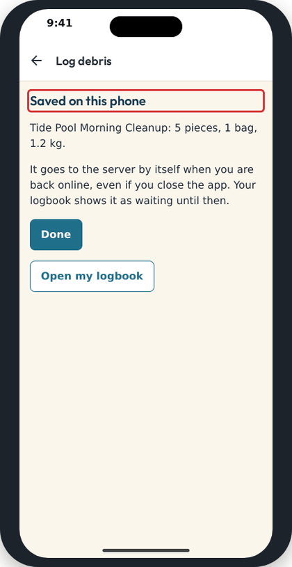

Session 14: Offline First and Permissions
How to teach Session 14 of React Native & Expo: Build and Ship a Mobile App: turn Lesson 5.4's paused mutation into an outbox that outlives the app (a Zustand queue saved with persist on AsyncStorage, a sender that sorts every answer, one log sent four ways to the real API), then open Module 6 with the permission step every device feature uses (the life of a permission on iPhone, Android and the web preview, Expo's tools, a gate that explains before it asks, config plugins and the words on the question), with two labs whose starters fail exactly the way the lessons' Common Mistakes do.
How to Use This Guide
- Same rhythm for both lessons: frame (the goal and one mental model) → live demo (you type, they follow) → guided lab (a kit lab: new practice on the lesson's ideas, never the lesson's own project) → start the lesson's own project. The lesson exercises, quiz and journal are homework.
- Type, do not paste. Every command below was run to produce the output printed under it, in a learner's terminal with Node 24: the 5.5 commands on a copy of the app exactly as a learner has it at the end of Lesson 5.5 (the 6.1 ones at the end of 6.1), the API's answers against the course API. Where the lesson shows the same command, the kit's output is the lesson's card, word for word.
- No phone was used to make this kit, and today is where that matters most. The queue's phone side (AsyncStorage surviving a force-quit, NetInfo's reconnect, AppState's return to the foreground) and every real permission question (the iPhone asking once, Android twice, the Settings paths) come from Expo's, Apple's and Google's documentation, exactly as the lessons say. The web preview shows the flow: Chrome's offline switch and its location bubble. Have your own phone with Expo Go ready to show Step 9 of 5.5 and Step 6 of 6.1, and say plainly that menus and wording vary by version.
- The lessons are the reference. Keep
lesson_19.htmlandlesson_20.htmlopen in browser tabs for the tables (the answer table, the send moments, the platform table, Expo Go versus a development build) and the two diagrams. Labs live inlabs/module-14/:starter/folders andTASKS.mdare handouts;solution/folders are yours until the session is over. - Session 14 closes Module 5 and opens Module 6 (the phone itself). Both lessons are long (the pages estimate 160 and 135 minutes for a learner alone): the room does the thinking (orders of events, the platforms' rules) and the first two steps of each project; the rest goes home. Teal blocks are hands-on, amber blocks are watch-outs.
Lesson 5.5's bugs live in orders of events nobody tried (an answer lost on the way back, a sign-out in the middle of a send, a first read already running), and Lesson 6.1's live in dialogs your code never draws. Both are easy to nod along to and hard to apply. Protect the predictions: every demo step asks for one, and the two labs are built so that the starter fails the way the lesson's Common Mistakes do (the same setItem TypeError, the same "Maximum update depth exceeded", the same TS2345). Do not chase a phone in the room: the phone tests are Step 9 and Step 6 at home, hedged as the lessons hedge them. Draw on paper: the lesson's own advice for orders of events.
Before the Session
- ☐ Learners arrive with the finished Session 13 code (Lesson 5.4's debris-log form). Anyone behind starts from the course downloads:
lesson-19-start.zipfor Lesson 5.5 (the code after 5.4) andlesson-20-start.zipfor 6.1 (unzip intoshoreline/,.env.example→.env.localas its README says,npm ciinshoreline-crew). - ☐ Run the kit check once:
python3 labs/check_labs.py module-14from this kit's folder (12 runs, under three minutes, no API needed: the starters fail exactly as the task sheets say, the solutions pass their tests, type checks and lint). - ☐ Projector machine: VS Code on a
shorelinefolder at a large font; terminal 1 running the API (node server.ts), terminal 2 inshoreline-crew; a copy of the finished Lesson 5.5 code (lesson-19-end) for the 5.5 demo and oflesson-20-endfor the 6.1 demo, each withnpm cidone and started once (npx expo start, so Expo's types exist); the two demo scripts from the Answer Key saved asno-storage.mjsandanswers.mjsin the 5.5 copy; Chrome with the web preview, its DevTools Network panel (the Offline switch) and Sensors panel (a custom location) ready. - ☐ Board, before learners arrive: the lesson's life of a log (Send → saved in the queue → online? → POST with its clientId → logbook → out of the queue) and the answer table with empty right-hand cells (201, 200, 4xx, 401, no answer or 5xx); on the other side the life of a permission (not asked → the phone's question → granted / denied → blocked → Settings) with three columns: iPhone, Android, web preview.
- ☐ Print or share: the workbook (Start Here has the warm-up), sticky notes for the exit ticket.
| Symptom | Cause | Fix |
|---|---|---|
TypeError: Cannot read properties of undefined (reading 'setItem') (Node, Jest) / Cannot read property 'setItem' of undefined (phone) | persist with no storage option on a phone | storage: createJSONStorage(() => AsyncStorage) (Lesson 5.5, Zustand on a Phone). |
| The queue is empty at startup, then the log appears | Hydration is async; something read the store before AsyncStorage answered | skipHydration: true + loadLogQueue() in the splash Promise.all; useSendWaitingLogs gets null until savedLoaded. |
| Blank page, React error #185 / "Maximum update depth exceeded" | A filtered selector without useShallow | Wrap it in useShallow; or select a number (.length). |
| Logbook still "empty" after a send | Only invalidateQueries: a first read already running wins | cancelQueries then invalidateQueries (the lesson's last Common Mistake). |
| A log never leaves the queue | It was refused (4xx), or the address is wrong for the phone (Lesson 5.1) | Read the card's line; Send now; check .env.local. |
| The web preview fails to open a screen while offline | It loads a screen's code the first time you visit it | Visit the Logbook tab once before switching to Offline (Step 8). |
| The location question shows Expo Go's words, not yours | Expected: Expo Go is its own app | Your purpose string appears in your own build (Module 9). |
| No question appears at all; the panel says blocked | Answered before (another project in Expo Go, or Chrome's Never allow) | Reset: site settings › Reset permission; Expo Go: the lesson's Step 6 notes. |
| Endless "Finding where you are…" | A yes is not a position: no fix, or (web) no position to give | Sensors panel custom location in Chrome; hasServicesEnabledAsync (FAQ). |
TS2345 … is not assignable to parameter of type 'PermissionHookResult' | The Hook passed uncalled | Read the last line: Location.useForegroundPermissions(). |
Session 14 Agenda (3 hours)
| Clock | Minutes | Segment | What happens |
|---|---|---|---|
| 0:00 | 10 | Warm-up: where does it live? | Retrieval from Session 13: memory, AsyncStorage, SecureStore or SQLite? What Lesson 5.4's airplane-mode test showed. |
| 0:10 | 10 | 5.5 Frame and mental model | The outbox and the logbook in a dry bag; two rules (save before sending, leave only after the server and the logbook have it). |
| 0:20 | 25 | 5.5 Live demo | persist with no storage (the lesson's TypeError), the queue's three phone options, one log sent four ways to the API, the sender's answer table. |
| 0:45 | 25 | 5.5 Guided lab | labs/module-14/l5_5-offline-first/starter: Task 1 in pairs (the queue saves itself), then Task 2 (every answer means something). |
| 1:10 | 15 | 5.5 Start the lesson project | Steps 1 and 2: install Zustand, write src/state/logQueue.ts. Steps 3 to 9 go home. |
| 1:25 | 10 | Break | Leave the answer table and the life-of-a-log diagram on the board. |
| 1:35 | 10 | 6.1 Frame and mental model | The farm gate on the way to the beach; the life of a permission on iPhone, Android and the web preview; five rules. |
| 1:45 | 25 | 6.1 Live demo | Expo's three tools and PermissionResponse; permissionStep as a table; the gate's faces; TS2345 (the Hook passed uncalled); config plugins and introspect. |
| 2:10 | 25 | 6.1 Guided lab | labs/module-14/l6_1-permissions-done-right/starter: Task 1 in pairs (every answer is a step), then Task 2 (explain, then ask). |
| 2:35 | 15 | 6.1 Start the lesson project | Steps 1 and 2: install expo-location with Shoreline Crew's words, write src/hooks/usePermission.ts. Steps 3 to 6 go home. |
| 2:50 | 10 | Wrap-up | Exit ticket (3 questions), homework, bring list for Session 15. |
| Total | 180 | Ends at 3:00. |
In the room. The lesson pages estimate 160 + 135 = 295 minutes for a learner working alone; after the warm-up, the break and the wrap-up the room has 150. Each lesson keeps its full shape (model, demo, lab, project start) at 75 minutes, with the reading and most of each project at home.
Goes home (about 2 to 3 hours). Lesson 5.5's project Steps 3 to 9 (the sender, loading behind the splash and the send moments, the form handing its log to the queue, the Logbook's Not sent yet, the tab badge, the two web-preview experiments, the airplane-mode test on a phone, the checks and the commit); Lesson 6.1's project Steps 3 to 6 (the gate, the distance panel, every face in the web preview, the real questions in Expo Go, the checks and the commit); both labs' remaining tasks; each lesson's Hands-on Exercises; both Quick Quizzes; both journal entries; both "Before the Next Lesson" lists.
Protect, in this order: the 5.5 "one log, sent four ways" step (the answer table everything rests on); the 6.1 platform table and the gate's faces; both labs' Task 1. Cut first: the 5.5 "when to send" step and the 6.1 re-read step (both are short reads at home), then the second lab task of each lab (homework), then the 6.1 project start (Steps 1 and 2 go home).
Opening Segment
Warm-up: Where Does It Live?
10 min| 6m | W1 to W3 on the workbook's Start Here page, alone, then pairs compare |
| 4m | Reveal and connect: the one thing missing from Session 13 is a place that survives the app for things on their way |
- W1 (sort four things). The session token, the theme choice, the logbook of sent logs, a debris log sent with no signal (Lesson 5.4). Answers: SecureStore, AsyncStorage, SQLite, memory (TanStack Query's paused mutation).
- W2 (Lesson 5.4's airplane test). "You sent a log offline and force-quit Expo Go. What happened?" It disappeared: the screen even said "Keep the app open until then." That is tonight's first problem.
- W3 (the clientId). When is it made and why? Once per form visit, on the phone (
randomUUID()), so a resend is recognized: hold the answer; the 5.5 demo proves it against the API. - Bridge: "Lesson 5.3's rule still holds: the phone keeps copies, the server keeps the truth. Tonight we add a copy that is still on its way, and then Module 6 starts using the phone itself, which begins with asking permission."
Lesson Plans
Offline First
75 min- Explain "offline first" as an outbox: write on the device first, send when you can, and say what a paused mutation from Lesson 5.2 cannot do
- Persist a Zustand store on a phone with persist and AsyncStorage, load it behind the splash screen, and say what differs from the web course's localStorage store
- Send a queue safely: one log at a time, the same clientId on every try, and a different reaction to each kind of answer (sent, refused, signed out, no answer)
- Choose the moments to send (start, sign-in, back online, back in the foreground) with the online and focus managers you already have
- Keep each volunteer's unsent work apart on a shared phone
| 10m | Frame: the outbox; the logbook in a dry bag; paused mutation versus saved queue; the two rules |
| 25m | Live demo: persist with no storage, the three phone options, one log sent four ways, the sender, the send moments |
| 25m | Guided lab: l5_5-offline-first/starter, Task 1 in pairs, then Task 2 |
| 15m | Start the lesson project: Steps 1 and 2 |
From the lesson: "On the beach, the crew leader does not phone in each count the moment it is made. The counts go into a logbook in a dry bag, and the bag rides home in the van whatever the weather. At the office, someone copies the pages to headquarters, ticks each one off, and asks again about any page headquarters did not confirm. The queue is the dry bag: once a log is in it, rain (no signal) and a capsized kayak (the app closing) do not matter. The clientId is the page number that stops headquarters from filing the same page twice."
Then the lesson's comparison as two columns on the board, Lesson 5.4: a paused mutation (in memory; gone when the app closes; sent by the mutation; visible only on the form) and today: a saved queue (in AsyncStorage the moment Send is pressed; read back at the next start; sent by a small sender at start, sign-in, reconnect and foreground; visible on the form and the Logbook tab). Then the two rules: save before sending, leave the queue only after the server and the logbook have it. And the scope: queue what a person creates (a log), let what the server decides (a sign-up) wait for the server.
In the copy of the finished Lesson 5.5 code (Before the Session), then the API. Ask for a prediction before every run.
- The mistake that ships: persist with no storage (5m). "Lesson 7.3 of the web course gave you a persisted Zustand store. Copy it to the phone as it was: will tsc catch anything? Will the web preview?" Neither:
storageis optional, and the web preview has localStorage. Then run the lesson's own measurement, in the folder of the finished Lesson 5.5 code: the web course's store in Node, with a window that has no localStorage, as on a phone:// The web course's persisted store, copied as it was: no storage option globalThis.window = {}; // a window without localStorage, as on a phone const { create } = await import('zustand'); const { persist } = await import('zustand/middleware'); const useLogQueue = create()( persist((set) => ({ logs: [], add: (log) => set(({ logs }) => ({ logs: [...logs, log] })) }), { name: 'shoreline-crew-log-queue', }), ); try { useLogQueue.getState().add({ clientId: 'c3a0f6b2' }); console.log('add worked'); } catch (error) { console.log('add threw: ' + error); } // node no-storage.mjs
add threw: TypeError: Cannot read properties of undefined (reading 'setItem')
The kit's run is the lesson's card, word for word. On a phone that is a red screen when Send is pressed (Hermes words it "Cannot read property 'setItem' of undefined"; the course could not run a phone). Fix: name the storage. - The queue's three phone options (5m). Open
src/state/logQueue.tsin the finished code. Point at the options one at a time and ask "what would break without it?":storage(the TypeError you just saw),partialize(a send killed halfway would come back assending: trueand never send again),merge(the HQ's check of saved data),skipHydration(AsyncStorage answers later than localStorage: the queue is read back behind the splash screen, with the session and the settings):shoreline-crew/src/state/logQueue.tsname: 'shoreline-crew-log-queue', // A phone has no localStorage: tell persist where to keep the queue storage: createJSONStorage(() => AsyncStorage), // Save the logs only. "Sending right now" ends when the app closes partialize: ({ logs }) => ({ logs }), // Keep only the saved logs that pass the check merge: (saved, current) => { const logs = typeof saved === 'object' && saved !== null && 'logs' in saved ? saved.logs : []; return { ...current, logs: Array.isArray(logs) ? logs.filter(isQueuedLog) : [] }; }, // Reading AsyncStorage is async: the root layout loads the queue behind the splash screen skipHydration: true,
shoreline-crew/src/app/_layout.tsxuseSendWaitingLogs(savedLoaded && session !== null ? session.user.id : null); useEffect(() => { Promise.all([loadSession(), loadSettings(), loadLogQueue()]).finally(() => setSavedLoaded(true),
- One log, sent four ways (8m). "The queue meets four kinds of answer. Predict each one before I run it." Learners write the four predictions (workbook P1). The script sends the same log as Theo twice, as Amara (no spot at this cleanup) and with no sign-in, against the course API:
// One debris log, sent the ways a queue meets: what does shoreline-api answer each time? const api = process.env.API_URL ?? 'http://localhost:4000'; const log = { clientId: 'c3a0f6b2-5d1e-4c7a-9b8f-2e6d1a4c9f70', // made on the phone, saved with the log items: [{ category: 'glass', count: 2 }], bags: 1, weightKg: 1.5, recordedAt: new Date().toISOString(), }; async function send(token) { const response = await fetch(`${api}/api/events/e17/logs`, { method: 'POST', headers: { 'Content-Type': 'application/json', ...(token && { Authorization: `Bearer ${token}` }) }, body: JSON.stringify(log), }); return { status: response.status, body: await response.json() }; } const first = await send('dev-volunteer'); // Theo, who has a spot console.log(`Theo, first try: ${first.status}`); const again = await send('dev-volunteer'); // the answer was lost: the queue sends it again console.log(`Theo, same clientId again: ${again.status}, same log: ${again.body.id === first.body.id}`); const signIn = await fetch(`${api}/api/auth/sign-in`, { method: 'POST', headers: { 'Content-Type': 'application/json' }, body: JSON.stringify({ email: 'amara.diallo@example.com', password: 'shoreline-demo' }), }); const amara = await send((await signIn.json()).token); // Amara has no spot at this cleanup console.log(`Amara: ${amara.status} ${amara.body.message}`); const nobody = await send(null); // a sign-in that has ended console.log(`No sign-in: ${nobody.status} ${nobody.body.message}`); const logs = await fetch(`${api}/api/events/e17/logs`, { headers: { Authorization: 'Bearer dev-volunteer' } }); const saved = (await logs.json()).filter((item) => item.clientId === log.clientId); console.log(`Theo's logs with this clientId on the server: ${saved.length}`); // node answers.mjs (with the API running)
Theo, first try: 201 Theo, same clientId again: 200, same log: true Amara: 403 Only volunteers with a spot at this cleanup can log for it. No sign-in: 401 Sign in first. Theo's logs with this clientId on the server: 1
The second line is why the clientId exists: the API recognized the resend and answered 200 with the log it already had, so the server holds one log. Then ask the lesson's question of each failure: "would asking again, unchanged, ever get a different answer?" - The sender sorts every answer (5m). Show the sender's catch block from the finished code and map it onto the lesson's answer table on the board: 401 stop and "sign-in ended", other 4xx refused with the server's words (and on to the next log), everything else counted and stop:
shoreline-crew/src/state/sendLogs.ts
} catch (error) { if (error instanceof ApiError && error.status === 401) { markSignInEnded(); // the sign-in has ended: keep everything for the next one break; } if (error instanceof ApiError && error.status < 500) { // A "no" (403 no spot, 409 not yet, 400 a field): sending again gets the same answer useLogQueue.getState().change(clientId, { status: 'refused', problem: error.message }); } else { // No answer, or server trouble: keep it, count the try, and stop until the next chance useLogQueue.getState().change(clientId, { attempts: item.attempts + 1 });
Two details to say out loud: the log goes into the logbook BEFORE it leaves the queue (a crash in between means "send again", which the 200 makes harmless), and the loop re-reads the store after each await (Remove may have run meanwhile). - When to send, and the checks (2m). The Hook that sends at start or sign-in, on reconnect and on return to the foreground; the sender does nothing when offline, already sending or with nothing waiting, so calling it "too often" is harmless:
shoreline-crew/src/hooks/useSendWaitingLogs.ts
export function useSendWaitingLogs(volunteerId: string | null): void { useEffect(() => { if (volunteerId === null) { return; } const send = () => { void sendWaitingLogs(volunteerId); }; send(); // The two managers from Lesson 5.2: NetInfo and AppState on a phone, the browser on the web const stopOnline = onlineManager.subscribe((online) => { if (online) { send(); } }); const stopFocus = focusManager.subscribe((focused) => { if (focused) { send(); } }); return () => { stopOnline(); stopFocus(); }; }, [volunteerId]);
npx tsc --noEmit npx expo lint
env: load .env.local env: export EXPO_PUBLIC_API_URL
tsc prints nothing and expo lint only the twoenv:lines: the lesson's card. Sending while the app is CLOSED is not built (FAQ: expo-background-task, the system decides when).
- One treatment for every failure. "Any error: try again" (a 403 log re-sent forever) or "any error: give up" (a dead network loses the log). Coach: "Would asking again, unchanged, ever get a different answer?" (Self-check Q5; Lab 5.5 Task 2.)
- Everyone's logs with whoever is signed in. A sender with no volunteerId filter passes every test with one person; the lesson measured Theo's log saved as Maya's. Coach: "Whose token goes with this request?" (Quiz Q4.)
- A filtered selector without useShallow. Blank page, "Maximum update depth exceeded". Coach: "What does filter return each time Zustand asks?" (Self-check Q6; Lab 5.5 Task 3.)
Folder: learners work in labs/module-14/l5_5-offline-first/starter/ (task sheet labs/module-14/l5_5-offline-first/TASKS.md); your reference is labs/module-14/l5_5-offline-first/solution/. New material, the same ideas: an outbox of beach hazard reports (broken glass, an animal in trouble, a strong current). The store was copied from the web course (no storage), the sender treats every failure alike, and the Not sent yet list's selector builds a new array. MSW plays the server, one beach per kind of answer (201, 200, 403, 401, 503, no answer); no API, no phone. Shared lab install only.
- Run it as shipped (3m).
npm test: all eight tests fail, nearly all with one message. Read it from the top together, then ask where they saw it today (the demo's first step):
TypeError: Cannot read properties of undefined (reading 'setItem')
- Task 1 in pairs (8m): name the storage, save only the reports.
npm run typecheckprinted nothing as shipped: the bug is invisible to tsc. Expected when Task 1 is done (five pass; the three left are Tasks 2 and 3):
FAIL src/lab.test.tsx ✓ Task 1: an added report is saved in AsyncStorage, the reports only ✓ Task 1: a saved queue is read back at startup, without anything in an old shape ✓ Task 2: 201 and 200 both mean done: the reports leave the queue ✕ Task 2: a 403 is refused with the server's words, and the next report still goes ✕ Task 2: a 401 keeps everything, ends the sign-in and stops ✓ Task 2: no answer, or a 503: the report waits, the try is counted, the run stops ✓ Task 2: offline, or another volunteer's report: nothing is sent ✕ Task 3: the Not sent yet list shows only the viewer's reports, and Remove works Tests: 3 failed, 5 passed, 8 total
- Task 2 (10m): sort the answers. Circulate for
error.status >= 400(catches 401 too: the sign-in-ended test fails) and for a refused report that stops the loop (breakinstead of going on: the 403 test checks that the next report still goes). - Debrief (4m): "Which test proves a resend after a lost answer is harmless, and what makes it harmless on a real server?" (the 200 beach; the clientId the report carries from the moment it is written). Task 3 is homework: its failure is the lesson's React #185 (
Maximum update depth exceeded). All done, the solution's run ends:
PASS src/lab.test.tsx ✓ Task 1: an added report is saved in AsyncStorage, the reports only ✓ Task 1: a saved queue is read back at startup, without anything in an old shape ✓ Task 2: 201 and 200 both mean done: the reports leave the queue ✓ Task 2: a 403 is refused with the server's words, and the next report still goes ✓ Task 2: a 401 keeps everything, ends the sign-in and stops ✓ Task 2: no answer, or a 503: the report waits, the try is counted, the run stops ✓ Task 2: offline, or another volunteer's report: nothing is sent ✓ Task 3: the Not sent yet list shows only the viewer's reports, and Remove works Tests: 8 passed, 8 total
The lesson project is The Debris Log Queue, nine steps. In the room, do Steps 1 and 2 (15 minutes).
- Step 1: stop Metro,
npx expo install zustand. Point at "Installing 1 other package using npm": Zustand is plain JavaScript, not an SDK module, so Expo passes it to npm unchanged (the lesson's card; outputs differ by machine in the counts). - Step 2: type
src/state/logQueue.tsfrom the lesson (QueuedLog = LogToSend plus four fields, isQueuedLog, the four actions, the four persist options, loadLogQueue). Done in the room = the file type-checks (npx tsc --noEmitprints nothing). - Goes home: Steps 3 to 9. Step 8's two experiments need the web preview, Chrome's Network panel and the API; Step 9 (airplane mode, force-quit, reconnect) needs a phone and is written from the documentation, as the lesson says.

Ask these out loud during the demo and the lab:
- Where does a log wait with today's code, and what makes it survive the app closing? Answer: in the Zustand queue saved to AsyncStorage the moment Send is pressed; it is read back behind the splash screen at the next start.
- Why is a resend harmless? Answer: the clientId made on the phone: the API answers 200 with the log it already has.
- Why does the sender check
readSession()?.user.idbefore each request? Answer: a sign-out can happen mid-run; the server takes the volunteer from the token, so another person's token would make it their log. - Name three moments the queue sends. Answer: any three of Send, start or sign-in, back online, back in the foreground, Send now.
Workbook self-check, items Q1 to Q6.
Answers: Q1 C) It is gone: a paused mutation waits in memory, and memory ends with the app; Q2 B) add threw: TypeError: Cannot read properties of undefined (reading 'setItem'); Q3 A) So sending always starts as false: an app killed during a send would otherwise never send again; Q4 D) 200 with the log it already has, and the server holds one log; Q5 201 and 200 = done (logbook, then out of the queue); 403 = refused, kept with the server's words, never sent again by itself; 401 = keep everything, "Your sign-in has ended", stop; no answer and 503 = keep waiting, count the try, stop for now; Q6 C) It renders forever (Maximum update depth exceeded): wrap the selector in useShallow. Full set with explanations in the Answer Key.
Support: a one-line card: "save first, send later, leave only when the server and the logbook have it; sort every answer: done, refused, sign in, try later". In the lab, the pair reads each failing test's NAME aloud before its message: the names say the rule.
Stretch: Lab 5.5 Task 3 and its stretch question; the lesson's Exercise 3 (try again by itself, exponential backoff) and the Bonus Challenge (a delta sync with updatedSince, and the flaw the FAQ names).
Permissions Done Right
75 min- Describe the life of a permission on an iPhone, an Android phone and the web preview: not asked, granted, denied, and blocked (plus the one-time and approximate answers)
- Ask at the moment a feature needs it, explain why first, and handle "no" and "don't ask again" without trapping the person
- Use Expo's permission model: the permission Hooks, get…PermissionsAsync versus request…PermissionsAsync, the PermissionResponse object, and what the Hooks leave to you
- Write the words on the phone's question with a config plugin in app.json, ask only for what you use, and check what reaches the native projects
- Say what Expo Go, a development build and the web preview each show you about permissions
| 10m | Frame: the farm gate; the life of a permission on three platforms; five rules |
| 25m | Live demo: Expo's three tools, permissionStep, the gate's faces, TS2345, re-reading, config plugins and introspect |
| 25m | Guided lab: l6_1-permissions-done-right/starter, Task 1 in pairs, then Task 2 |
| 15m | Start the lesson project: Steps 1 and 2 |
From the lesson: "Some of Shoreline Crew's beaches are reached across private land. The crew does not knock on every farmhouse door when the van leaves the depot. It knocks when it reaches the gate, says in one sentence why, and if the answer is no, takes the long way round without arguing. If the gate is padlocked, nobody climbs it: the crew calls the office that holds the key. The gate is the permission, the sentence is your explanation, the long way round is your app working without it, and the office is the Settings app."
Then fill the platform table on the board with the room: iPhone asks once (one "Don't Allow" and it is blocked), Android may ask once more after the first no, the web preview blocks after Never allow; one-time answers (Allow Once, Only this time) and approximate location count as granted; answers change in Settings at any time. Then the five rules: ask in context, explain first (Continue, Not now), a no is an answer, say when only Settings can help, check before every use. Say once, plainly: the phone's behavior here comes from Apple's, Google's and Expo's documentation; the course could not run a phone, and your phone has the last word.
In the copy of the finished Lesson 6.1 code, then the browser for the screenshots. Ask for a prediction before every run.
- Three tools, one shape (5m). On the board:
get…PermissionsAsyncreads and never asks;request…PermissionsAsyncasks only while the phone still may, otherwise it returns the answer at once, silently; the Hook[response, request, get]reads on mount. Every module answers with the samePermissionResponse(status, granted, canAskAgain, expires). Then the finished code'spermissionStep, the lesson's table as code:shoreline-crew/src/hooks/usePermission.tsexport function permissionStep(response: PermissionResponse | null): PermissionStep { if (response === null) { return 'checking'; } if (response.granted) { return 'granted'; } if (response.status === 'undetermined') { return 'not-asked'; } // The web preview's answers always say canAskAgain: true, but a browser never asks again after // a "Block": treat a no there as blocked if (!response.canAskAgain || Platform.OS === 'web') { return 'blocked'; } return 'denied';
The web rule is one commented line: expo-location's web code answerscanAskAgain: trueeven after a block, and a browser never asks again. - The gate's faces (6m). Show the not-asked face and the screenshot of it in the web preview. Ask: "why is the button called Continue?" (the real Allow is the phone's; Apple asks that a screen before the system question leads on to it). Then the blocked face's Open Settings and its web fallback (
Linking.openSettings()throws where there is no Settings app):shoreline-crew/src/components/PermissionGate.tsxcase 'not-asked': return ( <View style={styles.box}> <AppText>{why}</AppText> <AppText variant="muted"> Your phone asks next. You can change your answer at any time in Settings. </AppText> <View style={styles.actions}> <Button label="Continue" variant="primary" onPress={() => permission.ask()} /> {notNow} </View> </View> );
shoreline-crew/src/components/DistancePanel.tsxfunction DistanceFromHere({ site, onNotNow }: { site: Site; onNotNow: () => void }) { const location = usePermission(Location.useForegroundPermissions()); return ( <PermissionGate permission={location} what="your location" why={`Shoreline Crew uses your location once, on this phone, to work out how far you are from ${site.name}. It is not sent anywhere.`} onNotNow={onNotNow} > <Distance site={site} /> </PermissionGate>
ThenDistanceFromHere: mounted only after the press, so the Hook reads then, and asks nobody. TheDistanceinside the gate exists only after a yes. - Forget the parentheses (4m). Make the lesson's mistake live in
DistancePanel.tsx:usePermission(Location.useForegroundPermissions). Ask for a prediction, then:npx tsc --noEmit
src/components/DistancePanel.tsx:43:34 - error TS2345: Argument of type '(options?: PermissionHookOptions<object> | undefined) => [LocationPermissionResponse | null, () => Promise<LocationPermissionResponse>, () => Promise<...>]' is not assignable to parameter of type 'PermissionHookResult'. 43 const location = usePermission(Location.useForegroundPermissions); ~~~~~~~~~~~~~~~~~~~~~~~~~~~~~~~~~ src/components/DistancePanel.tsx:43:34 43 const location = usePermission(Location.useForegroundPermissions); ~~~~~~~~~~~~~~~~~~~~~~~~~~~~~~~~~ Did you mean to call this expression? Found 1 error in src/components/DistancePanel.tsx:43Read it from the BOTTOM: "Did you mean to call this expression?" is the whole answer; the long first line is the Hook's own type. The kit's run is the lesson's card. Undo; tsc prints nothing again. - Re-reading after Settings (3m). Show usePermission's focus subscription: Expo's Hook reads once on mount and after each request, so a volunteer who allowed location in Settings and came back would still see "blocked". The focus manager from Lesson 5.2 is the same signal the queue uses:
shoreline-crew/src/hooks/usePermission.ts
export function usePermission([response, ask, check]: PermissionHookResult): Permission { useEffect( () => // The focus manager from Lesson 5.2: AppState on a phone, the browser tab on the web focusManager.subscribe((focused) => { if (focused) { void check(); } }), [check], ); return { step: permissionStep(response), ask, check };
- The words on the question (7m). "Who writes the sentence in the iPhone's question?" The app's Info.plist, which an Expo project never keeps:
npx expo prebuildgenerates it from app.json and the config plugins. Show the plugin entry, then look without building anything:shoreline-crew/app.json"expo-location", { "locationWhenInUsePermission": "Shoreline Crew uses your location to show how far you are from a cleanup's meeting point.", "locationAlwaysAndWhenInUsePermission": false, "locationAlwaysPermission": false, "motionUsagePermission": false, "locationFullAccuracyPermission": falsenpx expo config --type introspect
NSLocationWhenInUseUsageDescription: "Shoreline Crew uses your location to show how far you are from a cleanup's meeting point.", NSFaceIDUsageDescription: 'Allow $(PRODUCT_NAME) to access your Face ID biometric data.',
(Lines with UsageDescription only, as the lesson's Exercise 3 searches them; the command prints the whole config.) Now remove the expo-location entry and run it again: the plugin still runs, in its default words, Always and motion included: - .
NSLocationAlwaysAndWhenInUseUsageDescription: 'Allow $(PRODUCT_NAME) to access your location', NSLocationAlwaysUsageDescription: 'Allow $(PRODUCT_NAME) to access your location', NSLocationWhenInUseUsageDescription: 'Allow $(PRODUCT_NAME) to access your location', NSMotionUsageDescription: 'Allow $(PRODUCT_NAME) to detect your current motion activity', NSFaceIDUsageDescription: 'Allow $(PRODUCT_NAME) to access your Face ID biometric data.', NSLocationTemporaryUsageDescriptionDictionary: { ExpoLocationFullAccuracy: 'Allow $(PRODUCT_NAME) to access your precise location'expo-location's plugin is applied automatically, which is whynpx expo install expo-locationadded no entry; the entry exists to pass your words andfalse. Then the catch: Expo Go uses none of it: it is its own app with its own strings. Your words appear in a development or store build (Module 9). The NSFaceIDUsageDescription line comes from Lesson 4.3's expo-secure-store: Exercise 2 removes it.
- Asking at startup. "Get permissions out of the way" in the root layout. Coach: "What did the volunteer just do that needs it?" On an iPhone a no given there is final (Self-check Q7; Lab 6.1 Task 2).
- The position with no permission step.
getCurrentPositionAsync()straight away shows "Could not find where you are…" after a no: a wrong message and a Try again that can never work. Coach: "Which face should a no get?" - Trusting canAskAgain in the web preview. "Ask me again" that asks nothing. Coach: "When a platform's answer cannot be trusted, where does that knowledge live?" (one commented line in permissionStep).
Folder: labs/module-14/l6_1-permissions-done-right/starter/ with labs/module-14/l6_1-permissions-done-right/TASKS.md; your reference is labs/module-14/l6_1-permissions-done-right/solution/. New material: the microphone, for a voice note on a debris log. A stand-in module (src/microphone.ts) plays the phone: its Hook is built with createPermissionHook from expo, the way every Expo module builds its own, so it returns the same tuple as Location.useForegroundPermissions(); the tests decide what the phone answers and count its questions. Shared lab install only.
- Run it as shipped (3m).
npm test(seven of twelve fail) andnpm run typecheck, whose one error is today's TS2345 in a new place:
src/VoiceNotePanel.tsx:30:36 - error TS2345: Argument of type '(options?: PermissionHookOptions<object> | undefined) => [PermissionResponse | null, RequestPermissionMethod<PermissionResponse>, GetPermissionMethod<...>]' is not assignable to parameter of type 'PermissionHookResult'.
- Task 1 in pairs (8m):
permissionStepfor six answers (the table from the demo, the web rule included). Expected when it is done: the six Task 1 tests pass. - Task 2 (10m): the ask-first gate: no asking on mount, Continue (not Allow), Not now, Open Settings with a fallback when
openSettingsthrows. Ask whatnpm run lintsaid about the starter's mount effect:
26:22 warning 'setNoSettings' is assigned a value but never used @typescript-eslint/no-unused-vars 32:6 warning React Hook useEffect has a missing dependency: 'permission'. Either include it or remove the dependency array react-hooks/exhaustive-deps
- Debrief (4m): "Why does the linter's exhaustive-deps warning not catch the real problem?" (it is about stale values; the real problem is WHEN the question is asked: only a test that counts questions, or a person, notices). Task 3 is homework (call the Hook, then re-read on focus). All done, the solution's run ends:
PASS src/lab.test.tsx ✓ Task 1: still reading on ios is checking ✓ Task 1: granted on android is granted ✓ Task 1: never asked on ios is not-asked ✓ Task 1: denied, may ask again on android is denied ✓ Task 1: denied, canAskAgain false on ios is blocked ✓ Task 1: denied in the web preview on web is blocked ✓ Task 2: the explanation asks nothing until Continue is pressed ✓ Task 2: Not now asks nothing ✓ Task 2: blocked: Open Settings, and where there is none, Check again ✓ Task 2: the feature appears only after a yes ✓ Task 3: nothing is read or asked before the press; then the explanation, then the feature ✓ Task 3: back from Settings, the panel reads the answer again by itself Tests: 12 passed, 12 total
The lesson project is Location, Asked Politely, six steps. In the room, do Steps 1 and 2 (15 minutes).
- Step 1: stop Metro,
npx expo install expo-location, then the plugin entry in app.json with Shoreline Crew's sentence andfalsefor the four strings it does not use. Point at what is missing from the install's output compared with expo-secure-store in Lesson 4.3: no "Added config plugin" line. - Step 2: type
src/hooks/usePermission.ts(PermissionHookResult, PermissionStep, permissionStep, usePermission with the focus subscription). Done in the room = it type-checks. - Goes home: Steps 3 to 6 (the gate, the distance panel, every face in the web preview with Chrome's site settings and Sensors panel, the real questions in Expo Go). Step 6 is written from the platforms' documentation, as the lesson says: whatever a learner's phone does differently goes in their journal.

Ask these out loud during the demo and the lab:
- What is the difference between
get…PermissionsAsyncandrequest…PermissionsAsync? Answer: get only reads; request asks while the phone still may, else returns the answer at once. - Theo's iPhone said Don't Allow last week. Which face today? Answer: blocked, with Open Settings: an iPhone asks once.
- Why does the panel mount DistanceFromHere only after the press? Answer: so the Hook reads (and nothing asks) only when the volunteer wants the distance.
- Where do your purpose-string words appear, and where not? Answer: in your own development or store build; not in Expo Go (its own app, its own words) and not in the web preview (the browser's).
Workbook self-check, items Q7 to Q12.
Answers: Q7 D) From Continue, on a one-sentence explanation shown after the volunteer presses Take a photo; Q8 B) 'denied': "that is fine", the reason again, and Ask me again; Q9 A) Call the Hook: usePermission(Location.useForegroundPermissions()); Q10 C) Five location and motion strings in the plugin's default words, Always location included; Q11 It never asks by itself (unless { request: true }): the gate's Continue asks. It never reads the answer again after Settings: usePermission calls check() when focusManager says the app is back in the foreground. (Also: on the web canAskAgain is always true: permissionStep treats a web no as blocked.); Q12 A) The share sheet (Lesson 4.4). Full set with explanations in the Answer Key.
Support: the five-step card (checking, not asked, denied, blocked, granted) next to the three fields that decide it (granted, status, canAskAgain), and the web rule in red. Pair learners without a phone with a phone owner for Step 6 at home, or have them write what each face would show from the platform table.
Stretch: Lab 6.1 Task 3 and its stretch question ({ request: true }); the lesson's Exercise 3 (introspect with and without the entry) and the Bonus Challenge (a Phone permissions card on Profile).
Closing
Put the three questions on the slide. Learners answer in the workbook's Exit Ticket box or on a sticky note. Sort the notes before Session 15: question 3's pile tells you how much of Session 15's warm-up goes back to the permission step (Lesson 6.2's camera goes through it unchanged).
- Name the two rules that make the queue safe. Answer: save the log before sending anything; remove it from the queue only after the server and the logbook both have it.
- A queued log comes back 403. What does the queue do, and why not try again later? Answer: mark it refused with the server's words and stop sending it by itself; asking again unchanged gets the same answer.
- Why does the explanation's button say Continue, and what happens after an iPhone's first "Don't Allow"? Answer: the real Allow is the phone's own question, which Continue leads to; after one no an iPhone never asks again: the blocked face, Open Settings.
- Finish both lesson projects. 5.5: Steps 3 to 9 (with Step 8's two experiments in the web preview and Step 9's airplane-mode test on a phone if you have one), the checklist, the commit. 6.1: Steps 3 to 6, every face in the web preview, the real questions in Expo Go, the commit.
- Lesson exercises. 5.5: Exercises 1 and 2; Exercise 3 is a stretch. 6.1: Exercises 1 and 2; Exercise 3 is a stretch.
- Both Quick Quizzes on the lesson pages (five questions each; answers in the Answer Key).
- Labs: Lab 5.5 Task 3 (useShallow); Lab 6.1 Task 3 (call the Hook, re-read on focus).
- Journal: both entries (5.5: the timeline of one debris log; 6.1: three apps that use your location and the purpose string you would give each).
- Before the Next Lesson (from 6.1): Step 6 on your phone (Android's second chance if you have one); take two photos with your phone's camera and look at their file sizes: Lesson 6.2 has to send photos like these over one bar of signal.
- The course folder with the finished Lesson 6.1 code (the How far is it? panel;
usePermissionandPermissionGatein place), tsc and expo lint clean, committed. Behind?lesson-21-start.zipis the code Session 15 starts from. - Session 15 (Lessons 6.2 and 6.3) puts the camera through the same usePermission and PermissionGate, adds photos to the debris log in this session's queue, and checks in with an organizer's code: bring the two photo file sizes from the homework.
- A phone with Expo Go if you have one (the camera and the map are best seen on one), the journal and the workbook.
If You Run Long or Short
- Protect: "one log, sent four ways"; the platform table and the gate's faces; both labs' Task 1.
- Cut first (saves 7m): the 5.5 "when to send" step and the 6.1 re-read step (both are short reads at home).
- Cut second (saves 15m): both labs' Task 2 (homework, with the solutions' runs in the Answer Key).
- Cut third (saves 15m): the 6.1 project start: learners do Steps 1 and 2 at home; the demo already showed the plugin entry and permissionStep.
- Lesson 5.5's Exercise 1 together (predict the queue in four cases; the lesson's measured solution).
- Lesson 6.1's Exercise 1 together (predict the face on five phones), then Exercise 2 live:
["expo-secure-store", { "faceIDPermission": false }]and introspect (the Answer Key has the kit's run). - Step 8's experiment A of Lesson 5.5 on the projector: Chrome's Offline switch, Send, the badge, back online, the card moves down.